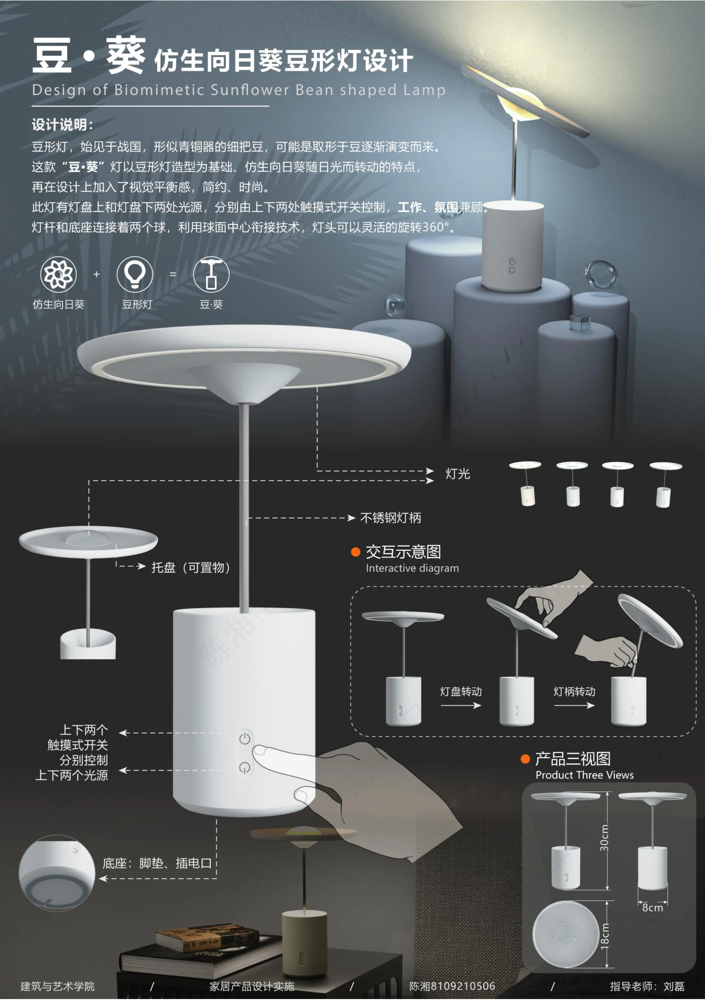

PROJECT 08 / SUNFLOWER LAMP
豆·葵 · 仿生向日葵豆形灯
以向日葵的形态与转动意象，探索灯具的功能和互动。

自然形态的转译
从豆形灯与向日葵中提取造型语言，以圆盘灯头和简洁底座组合，探索桌面照明与物品放置的结合。
两种光源与操作
展板设计上下两个光源，由触摸开关分别控制，并用球面连接构想表现灯头的灵活转动。
比例与使用细节
方案展示灯头、可置物托盘、不锈钢灯柄、底座和充电口，并提供交互示意与产品三视图。
PROCESS / 设计过程与展板
CLICK TO VIEW FULL SIZE以下为作品集中记录的设计方案与过程。图片可点击放大查看，保留原稿内容与水印。

内容来源：《陈湘作品集（展板）》第 5 页左侧。未明确的项目时间、个人分工及落地结果未作推断。